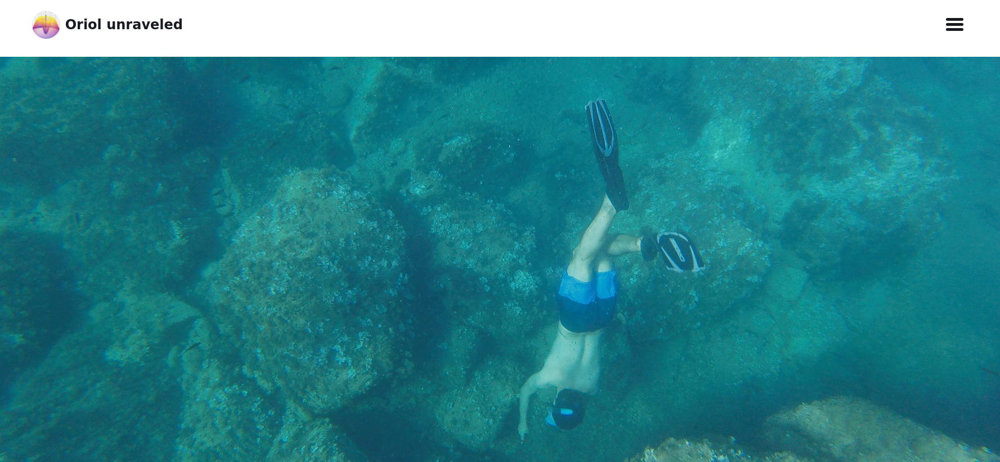
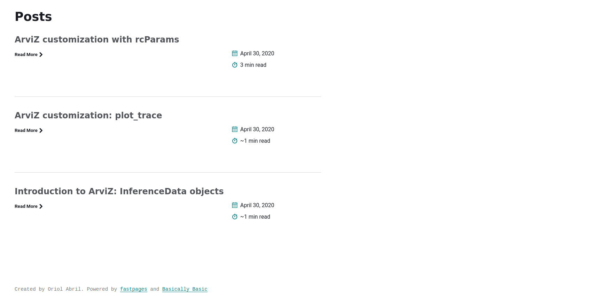
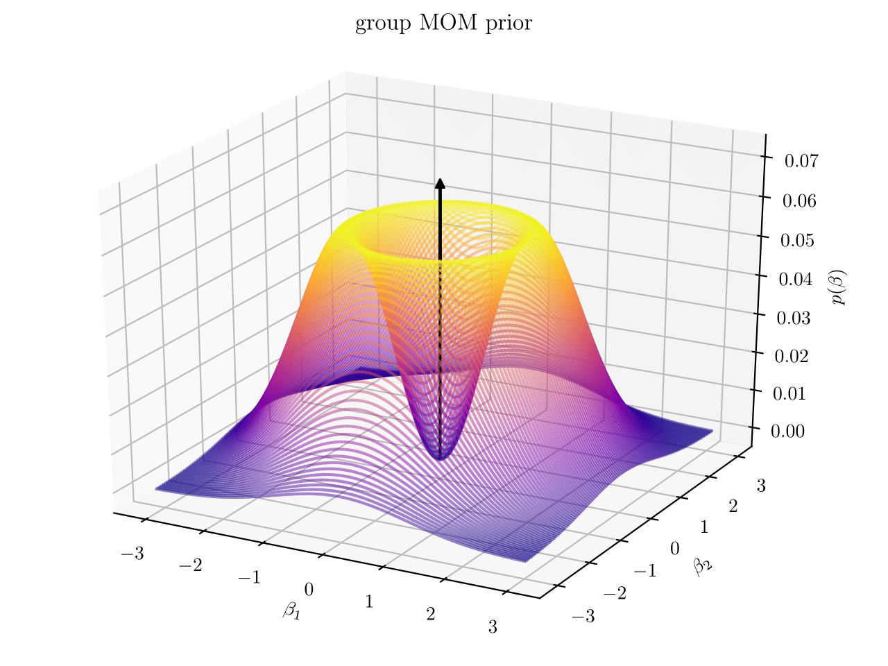
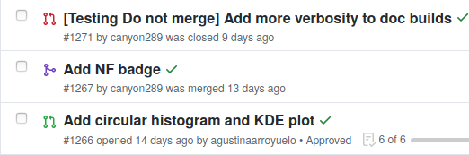
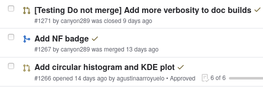

Creating a blog#
These days, there are countless blogging alternatives covering an
extremely wide range of needs, from writing everything in .docx format to
customizing every minor nit with CSS and HTML. It is not difficult to get lost
in this sea of blogging alternatives and end up being unable to choose one of
the alternatives and set the blog up. I already experimented with
a blog during my Google Summer
of Code internship and I have now started this new blog. Thus, being this my
second blog, I am far from an expert in blogging platforms.
I cannot write a complete guide for prospective bloggers, however, I still feel like writing about how I created and configured this blog can be useful to anyone who is considering creating a blog somewhat similar to this one. As you may have guessed already from other pages in the blog, I highly value understanding what I do and being able to modify (or at least see) its inner workings.
The first section is an overview of the technologies and libraries used in this blog. Afterwards there are 3 sections covering the base of blogging: writing the content, building the blog and hosting it. These cover the base elements needed to get the blog running. Eventually, there is one section on more advanced configuration and on the features I value the most.
Overview#
The content for this blog is written using either jupyter notebooks, markdown
or docx files. Posts are then converted thanks to
fastpages to markdown and html files that
Jekyll can use to build the static website. Every
time a new commit is pushed to GitHub,
GitHub Actions are used to
automatically build the website and push it to the gh-pages branch. The
website stored in the gh-pages branch is then hosted on
GitHub pages. Here is the diagram of the workflow
from the fastpages website:

Writing content#
Writing the content using Markdown is one of the most common alternatives for writing blog posts. Writing in Markdown has many advantages and produces files which are readable both rendered and without rendering. To write code tutorials however, they are not too convenient as we need to manually execute each cell and add the output of the code to the post.
If we use Jupyter notebooks instead, we can keep the code, its output and the explanations in the same executable file. This is really convenient as I can easily rerun the notebooks whenever there has been a significant change in the libraries used and keep the tutorials up to date. The main drawback of writing posts in Jupyter notebooks is having to convert the notebooks to markdown or html so the post can be added to the blog. I am taking advantage of fastpages to both take care of the conversion and to automate the process.
Eventually, I only have to write my posts in either markdown or Jupyter notebook files and push them to GitHub. This is crucial to me as it makes creating new posts be only about writing! I don’t have to take care about conversion.
Building the blog#
This blog is built using Jekyll, an open source static website generator.
Roughly speaking, it takes a configuration file and the website content as markdown
or html files and generates a static website where the theme has been filled
with the content, pages and blog posts. The configuration file,
_config.yml contains information such as the theme or the markdown parser
to be used.
fastpages uses the default Jekyll theme: minima.
Even though minima has many features and everything works straight away with
fastpages, I wanted to use a different theme, to give another look to the
website and make it more attractive to readers.
I therefore tried changing the theme specified in _config.yml
for several new themes I found more visually attractive. I
found basically basic
(see screenshots below) and
massively to work
quite well right out of the box. Most of the themes did not work at all due to
incompatibilities with fastpages. After comparing both themes for a while, I
decided to go with massively. I therefore tweaked the theme to fix the minor
incompatibilities it presented with fastpages. This is still a work in
progress, not everything that works with fastpages+minima works with massively
yet.


Some of the tweaks will be detailed in the last two sections of the post, but most of them will not be covered here. If you are interested in any of the two themes and their compatibility with fastpages please reach out in an issue, or what’s nearly the same (thanks utterances), comment below.
Hosting a static website#
As explained in the overview, this website is hosted by GitHub pages. Even though this was initially the one that seemed more difficult to me, I actually found this step simpler than the other two. Basically GitHub Pages takes care of everything.
The main friction I encountered while using GitHub pages was the .nojekyll
file. There are two main ways of interacting with GitHub pages. The first
alternative is to push to gh-pages a directory containing a _config.yml
file with the Jekyll configuration and the content in Markdown and HTML
format. GitHub then builds the site for you using Jekyll. The second
alternative is to build the site and push the result to gh-pages branch
together with a .nojekyll file. The .nojekyll file tells GitHub to not
build the site with Jekyll and host directly the contents of the branch
instead.
In this particular case, we are using GitHub Actions from fastpages to convert the posts and build the site using Jekyll, so we are actually using the second alternative. Luckily, thanks to fastpages, these two alternatives do not affect the writing process at all.
The best of many worlds#
So far we have described how to create and maintain a plain blog, the main difference with forking the minima theme and writing a blog in markdown is the ability to write posts in Jupyter notebooks. I would like this blog to be more than that. This blog combines features from fastpages, massively and basically basic. My aim was to hand pick the features of each source that were a better fit to my idea and needs for this website.
The blog is mobile friendly thanks to the massively theme plus some extra tweaks from Basically Basic theme. I also borrowed the text size scaling from Basically Basic, now whatever the screen size, the text should always be readable.
I customized the favicon too. As you can see, it is neither the one of
fastpages nor of massively theme. It is a custom image of a MATLAB-style
waterfall plot of a 2d group MOM prior. You can see the regular scale image
used to generate the favicon below, more details on what is a group MOM prior
will come in a future post. This was actually simpler than I
expected, there are converters online to generate favicons from regular
images, and then saving the favicon as images/favicon.ico is enough for
everything to work.

fastpages also has support for many other awesome features such as google analytics, comments or SEO tag management. For now, I decided to use google analytics and comments powered by utterances but remove the SEO related code. I may add it again at some point after I better understand how they work.
Notebook shields#
Many of my posts will be tutorials written as Jupyter notebooks. Being able to include the content from ipynb files to the blog is awesome, but why stop here? fastpages allows to add 3 shields (shown below) to notebook posts so that the notebook can be opened in GitHub, Google Colab or Binder. Binder! :heart:


Binder generates a container where the notebook can be executed interactively
without requiring any local installation. This allows readers to run the code
included in the tutorial while they read it with little to no effort, just
click on the binder shield. Binder cannot work straight out of the box
however, to create the container it needs to know what should be installed. I
have used an environment.yml to install the required Python libraries with
Conda and a JuliaProject.toml for the Julia libraries. I may add also some R
dependencies too. Guidance on
specifying requirements for Binder can be found in its
docs.
Tag Archive#
The tag archive, similarly to the index of a reference book can be an invaluable help to readers in navigating the website and finding posts relevant to their interests. fastpages already includes a tag archive page unlike the massively theme, however, I think its single list formatting does not scale well with the number of posts and different tags. The table format from Basically Basic was much more attractive to me, so I combined the tag archive page from BB theme with the square layout of massively. I also removed the post image to get a more compact look.
Colour schemes and syntax highlighting#
Choosing a colour scheme for our code editors can be a very personal choice influenced by many different reasons. When configuring our code editor, we can decide whatever we want and choose to completely ignore everyone else in the entire world. With websites and other public resources however this is not a choice. Websites should be careful with their colour themes to be accessible to people with colour vision deficiency. One clear example of a bad practice on this is GitHub symbols of open and closed pull requests. The image below uses the Mozilla add-on Let’s get colour blind. to simulate how someone with Deuteranomaly sees a list of GitHub pull requests.


I used this same add-on to make sure everything could be seen without too much
effort and did a couple of changes to the fastpages-dracula pygments theme for
syntax highlighting. I also tried high contrast colour schemes
so feel free to contact me if you were to need help modifying the colour scheme
of your website. The plots in my post use the
arviz-darkgrid
theme whose palette is colourblind friendly, so I have not modified them. In
the future I’ll try to be more careful and try to not rely only on colour to
distinguish lines in plots.
Social Media links and serch icon#
Thanks to fontawesome I have been able to add links to GitHub and Twitter profiles and to the blog’s Atom feed: in the navigation bar. Moreover, there is also a link to the search page. Search is powered by Lunr via fastpages.
All these social media links are also in the copyright notice found in the website footer, where thanks to academicons, the links to my ORCID and Google Scholar profiles are also available. Fontawsome icons worked out of the box with all the 3 themes I tinkered with, while academicons was not supported by any of them and had to be added manually following the instructions on their website.